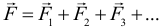
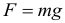
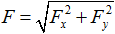
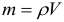
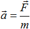

Оглавление:
-
Основные теоретические сведения
- Основы динамики
- Проекции сил
- Законы Нютона
- Сила Упругости
- Вес тела
- Сила трения
- Особенности решения задач по динамике с несколькими телами
- Вращательное движение
- Закон всемирного тяготения. Спутники
Основные теоретические сведения
Основы динамики
Если в кинематике только описывается движение тел, то в динамике изучаются причины этого движения под действием сил, действующих на тело.
Динамика – раздел механики, который изучает взаимодействия тел, причины возникновения движения и тип возникающего движения. Взаимодействие – процесс, в ходе которого тела оказывают взаимное действие друг на друга. В физике все взаимодействия обязательно парные. Это значит, что тела взаимодействуют друг с другом парами. То есть всякое действие обязательно порождает противодействие.
Сила – это количественная мера интенсивности взаимодействия тел. Сила является причиной изменения скорости тела целиком или его частей (деформации). Сила является векторной величиной. Прямая, вдоль которой направлена сила, называется линией действия силы. Сила характеризуется тремя параметрами: точкой приложения, модулем (численным значением) и направлением. В Международной системе единиц (СИ) сила измеряется в Ньютонах (Н). Для измерения сил используют откалиброванные пружины. Такие откалиброванные пружины называются динамометрами. Сила измеряется по растяжению динамометра.
Сила, оказывающая на тело такое же действие, как и все силы, действующие на него, вместе взятые, называется равнодействующей силой. Она равна векторной сумма всех сил, действующих на тело:

Чтобы найти векторную сумму нескольких сил нужно выполнить чертеж, где правильно нарисовать все силы и их векторную сумму, и по данному чертежу с использованием знаний из геометрии (в основном это теорема Пифагора и теорема косинусов) найти длину результирующего вектора.
Виды сил:
1. Сила тяжести. Приложена к центру масс тела и направлена вертикально вниз (или что тоже самое: перпендикулярно линии горизонта), и равна:

где: g - ускорение свободного падения, m - масса тела. Не перепутайте: сила тяжести перпендикулярна именно горизонту, а не поверхности на которой лежит тело. Таким образом, если тело лежит на наклонной поверхности, сила тяжести по-прежнему будет направлена строго вниз.
2. Сила трения. Приложена к поверхности соприкосновения тела с опорой и направлена по касательной к ней в сторону противоположную той, куда тянут, или пытаются тянуть тело другие силы.
3. Сила вязкого трения (сила сопротивления среды). Возникает при движении тела в жидкости или газе и направлена против скорости движения.
4. Сила реакции опоры. Действует на тело со стороны опоры и направлена перпендикулярно опоре от нее. Когда тело опирается на угол, то сила реакции опоры направлена перпендикулярно поверхности тела.
5. Сила натяжения нити. Направлена вдоль нити от тела.
6. Сила упругости. Возникает при деформации тела и направлена против деформации. Обратите внимание и отметьте для себя очевидный факт: если тело находится в покое, то равнодействующая сил равна нулю.
Проекции сил
К оглавлениюВ большинстве задач по динамике на тело действует больше чем одна сила. Для того чтобы найти равнодействующую всех сил в этом случае можно пользоваться следующим алгоритмом:
- Найдем проекции всех сил на ось ОХ и просуммируем их с учетом их знаков. Так получим проекцию равнодействующей силы на ось ОХ.
- Найдем проекции всех сил на ось OY и просуммируем их с учетом их знаков. Так получим проекцию равнодействующей силы на ось OY.
- Результирующая всех сил будет находится по формуле (теореме Пифагора):

При этом, обратите особое внимание на то, что:
- Если сила перпендикулярна одной из осей, то проекция именно на эту ось будет равна нулю.
- Если при проецировании силы на одну из осей «всплывает» синус угла, то при проецировании этой же силы на другую ось всегда будет косинус (того же угла). Запомнить при проецировании на какую ось будет синус или косинус легко. Если угол прилежит к проекции, то при проецировании силы на эту ось будет косинус.
- Если сила направлена в ту же сторону что и ось, то ее проекция на эту ось будет положительной, а если сила направлена в противоположную оси сторону, то ее проекция на эту ось будет отрицательной.
Законы Ньютона
Законы динамики, описывающие влияние различных взаимодействий на движение тел, были в одной из своих простейших форм, впервые четко и ясно сформулированы Исааком Ньютоном в книге «Математические начала натуральной философии» (1687 год), поэтому эти законы также называют Законами Ньютона. Ньютоновская формулировка законов движения справедлива только в инерциальных системах отсчета (ИСО). ИСО – система отсчета, связанная с телом, движущимся по инерции (равномерно и прямолинейно).
Есть и другие ограничения на применимость законов Ньютона. Например, они дают точные результаты только до тех пор, пока применяются к телам, скорости которых много меньше скорости света, а размеры значительно превышают размеры атомов и молекул (обобщением классической механики на тела, двигающиеся с произвольной скоростью, является релятивистская механика, а на тела, размеры которых сравнимы с атомными — квантовая механика).
Первый закон Ньютона (или закон инерции)
Формулировка: В ИСО, если на тело не действуют никакие силы или действие сил скомпенсировано (то есть равнодействующая сил равна нулю), то тело сохраняет состояние покоя или равномерного прямолинейного движения.
Свойство тел сохранять свою скорость при отсутствии действия на него других тел называется инерцией. Поэтому первый закон Ньютона называют законом инерции. Итак, причиной изменения скорости движения тела целиком или его частей всегда является его взаимодействие с другими телами. Для количественного описания изменения движения тела под воздействием других тел необходимо ввести новую величину – массу тела.
Масса – это свойство тела, характеризующее его инертность (способность сохранять скорость постоянной). В Международной системе единиц (СИ) масса тела измеряется в килограммах (кг). Масса тела – скалярная величина. Масса также является мерой количества вещества:

Второй закон Ньютона – основной закон динамики
Приступая к формулировке второго закона, следует вспомнить, что в динамике вводятся две новые физические величины – масса тела и сила. Первая из этих величин – масса – является количественной характеристикой инертных свойств тела. Она показывает, как тело реагирует на внешнее воздействие. Вторая – сила – является количественной мерой действия одного тела на другое.
Формулировка: Ускорение, приобретаемое телом в ИСО, прямо пропорционально равнодействующей всех сил, действующих на тело, и обратно пропорционально массе этого тела:

Однако при решении задач по динамике второй закон Ньютона целесообразно записывать в виде

Если на тело одновременно действуют несколько сил, то под силой в формуле, выражающей второй закон Ньютона, нужно понимать равнодействующую всех сил. Если равнодействующая сила равна нолю, то тело будет оставаться в состоянии покоя или равномерного прямолинейного движения, т.к. ускорение будет нулевым (первый закон Ньютона).